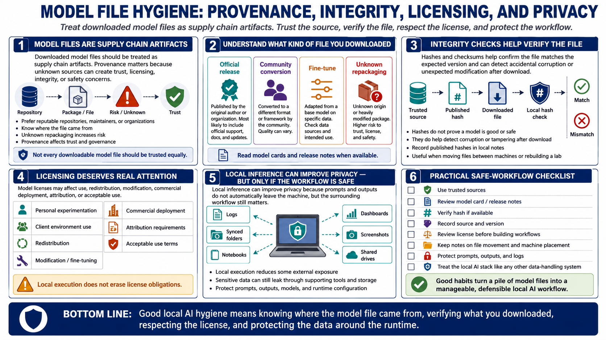

Provenance, Licensing, and Safety
Connecting to LMS... Progress: in progress

Narration
Downloaded model files should be treated as supply chain artifacts. Provenance matters because unknown sources can create trust, licensing, integrity, or safety concerns. Prefer model files from reputable repositories, maintainers, or organizations. Read model cards and release notes when they are available. Understand whether the file is an official release, a community conversion, a fine-tune, or an unknown repackaging.
File integrity checks help confirm that the file you have matches the expected version. Hashes and checksums do not prove that a model is good or safe, but they can detect accidental corruption or unexpected modification after download. When a trusted source publishes hashes, record them with your local notes. This is especially useful when moving model files between machines or rebuilding a lab.
Licensing needs real attention. Model licenses may affect use, redistribution, modification, commercial deployment, attribution, or acceptable use. A model that is fine for personal experimentation may not be allowed in a client environment or product. Local execution does not erase license obligations. Reviewing the license before building workflows around a model prevents painful surprises later.
Local inference can improve privacy because prompts and outputs do not automatically leave your machine. That benefit depends on the surrounding workflow. Logs, dashboards, synced folders, screenshots, notebooks, and shared drives can still expose sensitive data. Treat models, prompts, outputs, and runtime configuration with the same care you would apply to any other data-handling system.